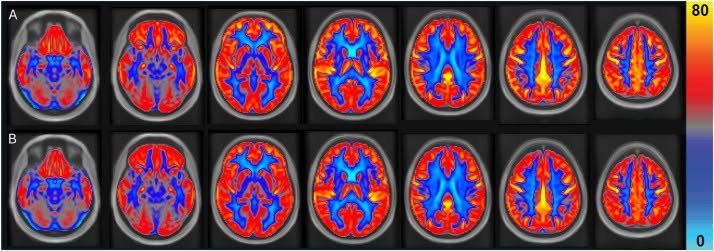

Daily peanuts raised brain blood flow about 4% in older adults, possibly via arginine
Louis shares a Clinical Nutrition study in which a daily 60 g serving of skin-roasted peanuts improved global brain blood flow by about 4% in older adults, roughly the decline seen over 10 years of aging. He suggests arginine-driven nitric oxide as the mechanism, and nuts as slow-release arginine that may also help heart health.